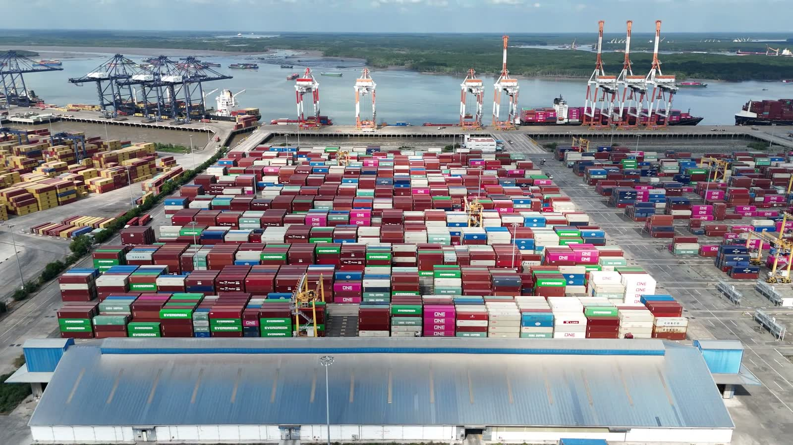

Food and Beverage
Shelf life sets the schedule, so bookings are planned backwards from the receiving window at destination.

Global network
Indian and Middle East origins to any major port worldwide.
Global network
A tight lane exposes the difference between a booking and a relationship. When space closes on the direct service, the useful question is which of four routings is worth its transit time and its transhipment risk.
Yentrans works with the major shipping lines and trades space with other NVOCCs, so a rolled sailing becomes a conversation with someone who picks up, not a form submitted into silence. Origins are Indian ports, Cochin chief among them, with Middle East loadings handled through the Dubai and Oman branches. Destinations are any major port worldwide. Membership of the Millennium Logistics Network puts a known agent at the far end of most lanes, which matters on the leg after discharge.

Bills of lading
Bank rejections happen at destination, long after the vessel sailed. Yentrans issues both House Bills of Lading and Master Bills of Lading, and which one a shipment moves on depends on what the cargo and the customer require. An HBL suits consolidated and multimodal movements where one party should be answerable for the through carriage. An MBL suits letters of credit and consignees whose instructions name the ocean carrier. The choice is made before booking.
How we work
You tell us origin, destination, cargo and any temperature or handling requirement. We come back with routings and rates, including the routing we would advise against and why.
Space is confirmed with the line or through an NVOCC counterpart, equipment is nominated, and the bill of lading type is settled in writing at this stage.
Export documentation is prepared, the customs entry is filed, and every certificate is read against the invoice before anything is presented to the bank.
We follow the vessel, tell you when a schedule changes, and hand over to the destination agent for clearance, inland haulage or door delivery as instructed.
Industries
Cargo behaves differently by industry, and so do the people shipping it. These are the nine sectors the Kochi and Gulf desks work with most often.
Shelf life sets the schedule, so bookings are planned backwards from the receiving window at destination.
Documentation and temperature discipline carry equal weight, and both are agreed with the shipper before the container is released.
Production lines dislike surprises, so we plan sailing options and inland timing around the assembly calendar.
Classification, packing declarations and line approvals are handled first, because a booking without them is not a booking.
Season deadlines and consolidated part loads, with LCL bookings built around buyer delivery windows and cut-off dates.
Heavy, low-value-per-tonne cargo where freight cost decides the deal, so routing is chosen on economics.
Volumes arrive in bursts against a short season, so space is negotiated in blocks before the peak.
Out-of-gauge and heavy-lift pieces need survey, lashing plans and carrier approval before a rate means anything.
Many suppliers, one consignee, and paperwork that has to agree with the purchase order line by line.
Send the origin, the destination, the cargo and the month you want it to move. We will reply with routings, rates and whatever we think you should know before booking.